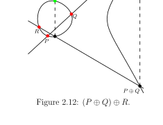

Figure 2.12: $(P \oplus Q) \oplus R$.
图 2.12：$(P \oplus Q) \oplus R$。
图 2.12：$(P \oplus Q) \oplus R$。

Figure 2.13: $P \oplus (Q \oplus R)$.
图 2.13：$P \oplus (Q \oplus R)$。
图 2.13：$P \oplus (Q \oplus R)$。
We now turn to describing the elliptic curve group law, and it is here that viewing pictures of elliptic curves over $\mathbb{R}$ is especially instructive. We start with a less formal description until we define the role of the point at infinity $\mathcal{O}$. The group law exploits the fact that, over any field, a line (a degree one equation in $x$ and $y$) intersects a cubic curve (a degree three equation in $x$ and $y$) in three places (this is a special case of a more general theorem due to Bezout [Har77, I.7.8]). Namely, if we run a line $\ell : y = \lambda x + \nu$ between two points $P = (x_P, y_P)$ and $Q = (x_Q, y_Q)$ on $E$, then substituting this line into $E : y^2 = x^3 + ax + b$ will give a cubic polynomial in $x$, the roots of which are the $x$-coordinates of the three points of intersection between $\ell$ and $E$. Knowing the two roots ($x_P$ and $x_Q$) allows us to determine a unique third root that corresponds to the third and only other point in the affine intersection $\ell \cap E$, which we denote by $\ominus R$ (the reason will become clear in a moment). The point $\ominus R$ is then "flipped" over the $x$-axis to the point $R$. In general, the elliptic curve composition law $\oplus$ is defined by this process, namely $R = P \oplus Q$. When computing $R = P \oplus P$, the line $\ell$ is computed as the tangent to $E$ at $P$. That is, the derivatives of $\ell$ and $E$ are matched at $P$, so (counting multiplicities) $\ell$ intersects $E$ "twice" at $P$. Figures 2.5 and 2.6 illustrate why this process is aptly named the chord-and-tangent rule.
现在我们来描述椭圆曲线的群运算法则。在这里，画出实数 $\mathbb{R}$ 上椭圆曲线的图像特别有助于理解。我们先给一个不太正式的描述，等定义好无穷远点 $\mathcal{O}$ 的作用后再详细展开。群运算利用了这样一个事实：在任何域上，一条直线（$x$ 和 $y$ 的一次方程）和一条三次曲线（$x$ 和 $y$ 的三次方程）会在三个地方相交（这是 Bezout 更一般定理的特例）。具体来说，如果在 $E$ 上两点 $P = (x_P, y_P)$ 和 $Q = (x_Q, y_Q)$ 之间画一条直线 $\ell : y = \lambda x + \nu$，然后把这条直线代入 $E : y^2 = x^3 + ax + b$，会得到一个关于 $x$ 的三次多项式，它的根就是 $\ell$ 和 $E$ 三个交点的 $x$ 坐标。已经知道两个根（$x_P$ 和 $x_Q$），我们就能确定唯一的第三个根，它对应仿射交 $\ell \cap E$ 中第三个也是唯一的另一个点，记为 $\ominus R$（原因一会儿就清楚）。然后把点 $\ominus R$ 沿 $x$ 轴"翻转"到点 $R$。一般地，椭圆曲线的合成运算 $\oplus$ 就这样定义，即 $R = P \oplus Q$。当计算 $R = P \oplus P$ 时，直线 $\ell$ 是 $E$ 在 $P$ 点的切线。也就是说，$\ell$ 和 $E$ 的导数在 $P$ 点匹配，所以（考虑重数）$\ell$ 在 $P$ 点与 $E$ "相交两次"。图 2.5 和 2.6 说明了为什么这个过程被恰当地命名为弦切法则。
Having loosely defined the general group operation, we can now (also loosely) define the role of the point at infinity $\mathcal{O}$. To try and place it somewhere in the above diagrams, one can think of $\mathcal{O}$ as being a point that simultaneously sits infinitely high and infinitely low in the $y$ direction. This allows us to informally conceptualise two properties of elliptic curve groups: firstly, that the point at infinity $\mathcal{O}$ plays the role of the identity of the group; and secondly, that the unique inverse of a point is its reflected image over the $x$-axis (e.g. the $\ominus R$'s in Figures 2.5 and 2.6 are the respective inverses of the $R$'s, and vice versa). If we apply the process in the previous paragraph to compute $R \oplus (\ominus R)$, we start by finding the vertical line that connects them (the dashed lines in Figures 2.5 and 2.6). This line also intersects $E$ (twice) at the point at infinity $\mathcal{O}$, which is then reflected back onto itself, giving $R \oplus (\ominus R) = \mathcal{O}$. Thus, if we define the identity of the group to be $\mathcal{O}$, then the inverse of any element $R = (x_R, y_R)$ is taken as $\ominus R = (x_R, -y_R)$.
粗略定义了一般的群运算后，我们现在可以（同样粗略地）定义无穷远点 $\mathcal{O}$ 的作用。要把它放到上面图中的某个位置，可以把 $\mathcal{O}$ 想象成一个同时位于 $y$ 方向无穷高和无穷低的点。这让我们能非正式地理解椭圆曲线群的两个性质：第一，无穷远点 $\mathcal{O}$ 扮演群的单位元角色；第二，一个点的唯一逆元是它沿 $x$ 轴的镜像（例如图 2.5 和 2.6 中的 $\ominus R$ 分别是 $R$ 的逆元，反之亦然）。如果我们用上一段的过程计算 $R \oplus (\ominus R)$，首先找到连接它们的竖直线（图 2.5 和 2.6 中的虚线）。这条线也在无穷远点 $\mathcal{O}$ 处与 $E$ 相交（两次），然后 $\mathcal{O}$ 反射回自身，得到 $R \oplus (\ominus R) = \mathcal{O}$。因此，如果我们把群的单位元定义为 $\mathcal{O}$，那么任何元素 $R = (x_R, y_R)$ 的逆元就是 $\ominus R = (x_R, -y_R)$。
Example 2.1.1 (Magma script). $E/\mathbb{R} : y^2 = x^3 - 2x$ is an elliptic curve. The points $(-1, -1)$, $(0, 0)$ and $(2, 2)$ are all on $E$, and are also on the line $\ell : y = x$. Applying the technique described above to compute some example group law operations via the line $\ell$, we have $(-1, -1) \oplus (0, 0) = (2, -2)$, $(2, 2) \oplus (0, 0) = (-1, 1)$, and $(-1, -1) \oplus (2, 2) = (0, 0)$. All but four points come in pairs with their inverse (i.e. $(x', y')$ and $(x', -y')$); the exceptions being $(0, 0)$, $(\sqrt{2}, 0)$, $(-\sqrt{2}, 0)$ (notice the vertical tangents when $y = 0$ in these cases), and $\mathcal{O}$, which are all their own inverse, e.g. $(0, 0) = \ominus(0, 0)$, so $(0, 0) \oplus (0, 0) = \mathcal{O}$ on $E$. The tangent line $\ell'$ to $E$ at $(-1, -1)$ is $\ell' : y = -\frac{1}{2}x - \frac{3}{2}$, and it intersects $E$ once more at $\left(\frac{9}{4}, -\frac{21}{8}\right)$, which gives $(-1, -1) \oplus (-1, -1) = [2](-1, -1) = \left(\frac{9}{4}, \frac{21}{8}\right)$.
例 2.1.1：$E/\mathbb{R} : y^2 = x^3 - 2x$ 是一条椭圆曲线。点 $(-1, -1)$、$(0, 0)$ 和 $(2, 2)$ 都在 $E$ 上，也都在直线 $\ell : y = x$ 上。用上面描述的技术通过直线 $\ell$ 计算群运算的例子：$(-1, -1) \oplus (0, 0) = (2, -2)$，$(2, 2) \oplus (0, 0) = (-1, 1)$，$(-1, -1) \oplus (2, 2) = (0, 0)$。除了四个点外，所有其他点都与它们的逆元成对出现；这四个例外是 $(0, 0)$、$(\sqrt{2}, 0)$、$(-\sqrt{2}, 0)$（注意当 $y = 0$ 时切线是竖直的）和 $\mathcal{O}$，它们都是自己的逆元。在 $(-1, -1)$ 处 $E$ 的切线是 $\ell' : y = -\frac{1}{2}x - \frac{3}{2}$，它与 $E$ 的另一个交点是 $\left(\frac{9}{4}, -\frac{21}{8}\right)$，这给出 $[2](-1, -1) = \left(\frac{9}{4}, \frac{21}{8}\right)$。
Example 2.1.2 (Magma script). In this example we consider the same curve equation as the last example, but this time over a small finite field, namely $E/\mathbb{F}_{11} : y^2 = x^3 - 2x$. Rational points are injected naturally across to the finite field case (as long as there is no conflict with the characteristic), so we can immediately find the points $(0, 0)$, $(2, 2)$ and $(-1, -1) = (10, 10)$ (and their inverses) in Figure 2.9. In this case, consider performing the group law operation between the (blue) points $(5, 7)$ and $(8, 10)$. The line $\ell$ that joins them is $y = x+2$, which intersects $E$ once more at $(10, 1)$. Negating the $y$-coordinate finds the other point on the dashed line, and gives $(5, 7) \oplus (8, 10) = (10, 10)$.
例 2.1.2：这个例子中我们考虑和上一例子相同的曲线方程，但这次在小有限域上，即 $E/\mathbb{F}_{11} : y^2 = x^3 - 2x$。有理点自然地映射到有限域情况（只要与特征没有冲突），所以我们可以立即在图 2.9 中找到点 $(0, 0)$、$(2, 2)$ 和 $(-1, -1) = (10, 10)$（及它们的逆元）。考虑在（蓝色）点 $(5, 7)$ 和 $(8, 10)$ 之间的群运算。连接它们的直线 $\ell$ 是 $y = x + 2$，它与 $E$ 的另一个交点是 $(10, 1)$。对 $y$ 坐标取反找到虚线上的另一个点，得到 $(5, 7) \oplus (8, 10) = (10, 10)$。
Example 2.1.2 is also intended to justify why, although (in cryptography) we only ever use elliptic curves over finite fields, we often opt to illustrate the group law by drawing the continuous pictures of curves over $\mathbb{R}$.
例 2.1.2 也是为了说明为什么虽然在密码学中我们只使用有限域上的椭圆曲线，但我们经常选择画实数 $\mathbb{R}$ 上曲线的连续图像来说明群运算。
We now focus our attention on giving a more formal definition for the point at infinity. So far we have been describing elliptic curves in affine space as a set of affine points together with the point at infinity: $E = \{(x, y) \in \mathbb{A}^2(K) : y^2 = x^3 + ax + b\} \cup \{\mathcal{O}\}$. In general, a more precise way to unify (or include) points at infinity with the affine points is to work in projective space: essentially, instead of working with points in $n$-space, we work with lines that pass through the origin in $(n+1)$-space. For our purposes, this means our affine points in 2-space become lines in 3-space, namely that $(x, y) \in \mathbb{A}^2(K)$ corresponds to the line defined by all points of the form $(\lambda x, \lambda y, \lambda) \in \mathbb{P}^2(K)$, where $\lambda \in K^*$. That is, $\mathbb{P}^2$ is $\mathbb{A}^3 \setminus \{(0, 0, 0)\}$ modulo the following congruence condition: $(x_1, y_1, z_1) \sim (x_2, y_2, z_2)$ if there exists $\lambda \in K^*$ such that $(x_1, y_1, z_1) = (\lambda x_2, \lambda y_2, \lambda z_2)$. Figure 2.10 illustrates the relationship between points in $\mathbb{A}^2$ with their congruence classes (lines) in $\mathbb{P}^2$; the lines in 3-space should also extend "downwards" into the region where $Z < 0$ but we omitted this to give more simple pictures. We reiterate that these lines do not include the point $(0, 0, 0)$.
现在我们来给无穷远点一个更正式的定义。到目前为止，我们一直把椭圆曲线描述为仿射空间中仿射点的集合加上无穷远点：$E = \{(x, y) \in \mathbb{A}^2(K) : y^2 = x^3 + ax + b\} \cup \{\mathcal{O}\}$。一般来说，把无穷远点和仿射点统一（或包含）起来的更精确方式是在投影空间中工作：本质上，不是在 $n$ 维空间中处理点，而是处理 $(n+1)$ 维空间中过原点的直线。对我们来说，这意味着 2 维空间中的仿射点变成 3 维空间中的直线，即 $(x, y) \in \mathbb{A}^2(K)$ 对应于 $\mathbb{P}^2(K)$ 中所有形如 $(\lambda x, \lambda y, \lambda)$ 的点定义的直线，其中 $\lambda \in K^*$。也就是说，$\mathbb{P}^2$ 是 $\mathbb{A}^3 \setminus \{(0, 0, 0)\}$ 模以下同余关系：如果存在 $\lambda \in K^*$ 使得 $(x_1, y_1, z_1) = (\lambda x_2, \lambda y_2, \lambda z_2)$，则 $(x_1, y_1, z_1) \sim (x_2, y_2, z_2)$。图 2.10 展示了 $\mathbb{A}^2$ 中的点与 $\mathbb{P}^2$ 中它们的同余类（直线）之间的关系；3 维空间中的直线也应该向下延伸到 $Z < 0$ 的区域，但为了让图更简单我们省略了。我们重申这些直线不包括点 $(0, 0, 0)$。
We usually use capital letters and colons to denote a (representative of a) congruence class in projective coordinates, so that in general $(X : Y : Z)$ represents the set of all points on the "line" in $\mathbb{P}^2$ that correspond to $(x, y) \in \mathbb{A}^2$. There are many copies of $\mathbb{A}^2$ in $\mathbb{P}^2$, but we traditionally map the affine point $(x, y) \in \mathbb{A}^2$ to projective space via the trivial inclusion $(x, y) \mapsto (x : y : 1)$, and for any $(X : Y : Z) \neq \mathcal{O} \in \mathbb{P}^2$, we map back to $\mathbb{A}^2$ via $(X : Y : Z) \mapsto (X/Z, Y/Z)$. The point at infinity $\mathcal{O}$ is represented by $(0 : 1 : 0)$ in projective space (see the last diagram in Figure 2.10), for which we immediately note that the map back to $\mathbb{A}^2$ is ill-defined.
我们通常用大写字母和冒号来表示投影坐标中同余类的（一个）代表，所以一般地 $(X : Y : Z)$ 表示 $\mathbb{P}^2$ 中对应于 $\mathbb{A}^2$ 中 $(x, y)$ 的"直线"上所有点的集合。在 $\mathbb{P}^2$ 中有 $\mathbb{A}^2$ 的许多副本，但我们通常通过平凡嵌入 $(x, y) \mapsto (x : y : 1)$ 把仿射点 $(x, y) \in \mathbb{A}^2$ 映射到投影空间，对于任何 $(X : Y : Z) \neq \mathcal{O} \in \mathbb{P}^2$，我们通过 $(X : Y : Z) \mapsto (X/Z, Y/Z)$ 映射回 $\mathbb{A}^2$。无穷远点 $\mathcal{O}$ 在投影空间中由 $(0 : 1 : 0)$ 表示（见图 2.10 的最后一个图），我们立即注意到映射回 $\mathbb{A}^2$ 的映射是未定义的。
Example 2.1.3 (Magma script). $E/\mathbb{R} : y^2 = x^3 + 3x$ is an elliptic curve. $P = (3, 6) \in \mathbb{A}^2(\mathbb{R})$ is a point on $E$. In projective space, $P$ becomes $P = (3 : 6 : 1) \in \mathbb{P}^2(\mathbb{R})$, which represents all points in $(3\lambda, 6\lambda, \lambda)$ for $\lambda \in \mathbb{R} \setminus \{0\}$. For example, the points $(12, 24, 4)$, $(-3\sqrt{-1}, -6\sqrt{-1}, -\sqrt{-1})$, $(3\sqrt{2}, 6\sqrt{2}, \sqrt{2})$ in $\mathbb{A}^3(\mathbb{R})$ are all equivalent (modulo the congruence condition) in $\mathbb{P}^2(\mathbb{R})$, where they are represented by $P$. As usual, the point at infinity on $E$ is $\mathcal{O} = (0 : 1 : 0)$.
例 2.1.3：$E/\mathbb{R} : y^2 = x^3 + 3x$ 是一条椭圆曲线。$P = (3, 6) \in \mathbb{A}^2(\mathbb{R})$ 是 $E$ 上的一个点。在投影空间中，$P$ 变成 $P = (3 : 6 : 1) \in \mathbb{P}^2(\mathbb{R})$，它表示对所有 $\lambda \in \mathbb{R} \setminus \{0\}$ 的所有点 $(3\lambda, 6\lambda, \lambda)$。例如，$\mathbb{A}^3(\mathbb{R})$ 中的点 $(12, 24, 4)$、$(-3\sqrt{-1}, -6\sqrt{-1}, -\sqrt{-1})$、$(3\sqrt{2}, 6\sqrt{2}, \sqrt{2})$ 在 $\mathbb{P}^2(\mathbb{R})$ 中（模同余条件后）都是等价的，它们都由 $P$ 表示。通常，$E$ 上的无穷远点是 $\mathcal{O} = (0 : 1 : 0)$。
The way we define the collection of points in projective space is to homogenise $E : y^2 = x^3 + ax + b$ by making the substitution $x = X/Z$ and $y = Y/Z$, and multiplying by $Z^3$ to clear the denominators, which gives
我们定义投影空间中点集的方式是齐次化 $E : y^2 = x^3 + ax + b$，做替换 $x = X/Z$ 和 $y = Y/Z$，然后乘以 $Z^3$ 清除分母，得到：
The set of points $(X, Y, Z)$ with coordinates in $K$ that satisfies (2.3) is called the projective closure of $E$. Notice that $(0, \lambda, 0)$ is in the projective closure for all $\lambda \in K^*$, and that all such points cannot be mapped into $\mathbb{A}^2$, justifying the representative of point at infinity being $\mathcal{O} = (0 : 1 : 0)$.
坐标在 $K$ 中且满足 (2.3) 的点 $(X, Y, Z)$ 的集合称为 $E$ 的投影闭包。注意对所有 $\lambda \in K^*$，$(0, \lambda, 0)$ 都在投影闭包中，且所有这样的点都不能映射到 $\mathbb{A}^2$，这证明了无穷远点的代表是 $\mathcal{O} = (0 : 1 : 0)$。
Example 2.1.4 (Magma script). Consider $E/\mathbb{F}_{13} : y^2 = x^3 + 5$. There are 15 affine points $(x, y) \in \mathbb{A}^2(\mathbb{F}_{13})$ on $E$, which (with the point at infinity $\mathcal{O}$) gives $\#E(\mathbb{F}_{13}) = 16$. On the other hand, if we homogenise (or projectify) $E$ to give $E_{\mathbb{P}}/\mathbb{F}_{13} : Y^2Z = X^3 + 5Z^3$, then there are 16 classes $(X : Y : Z) \in \mathbb{P}^2(\mathbb{F}_{13})$: $(0 : 1 : 0), (2 : 0 : 1), (4 : 2 : 1), (4 : 11 : 1), (5 : 0 : 1), (6 : 0 : 1), (7 : 6 : 1), (7 : 7 : 1), (8 : 6 : 1), (8 : 7 : 1), (10 : 2 : 1), (10 : 11 : 1), (11 : 6 : 1), (11 : 7 : 1), (12 : 2 : 1), (12 : 11 : 1)$. Each of these classes represents several points $(X, Y, Z) \in \mathbb{A}^3(\mathbb{F}_{13})$ whose coordinates satisfy $Y^2Z = X^3 + 5Z^3$ (there are actually 195 such points, but this is not important). In fact, each class represents infinitely many points on $E_{\mathbb{P}}(\mathbb{F}_{13})$. Any reader that is familiar with Magma, or has been working through our examples with the accompanying Magma scripts, will recognise the representation of points as representatives in $\mathbb{P}^2$.
例 2.1.4：考虑 $E/\mathbb{F}_{13} : y^2 = x^3 + 5$。有 15 个仿射点 $(x, y) \in \mathbb{A}^2(\mathbb{F}_{13})$ 在 $E$ 上，加上无穷远点 $\mathcal{O}$，得到 $\#E(\mathbb{F}_{13}) = 16$。另一方面，如果我们齐次化 $E$ 得到 $E_{\mathbb{P}}/\mathbb{F}_{13} : Y^2Z = X^3 + 5Z^3$，那么有 16 个类 $(X : Y : Z) \in \mathbb{P}^2(\mathbb{F}_{13})$。这些类中的每一个都代表 $\mathbb{A}^3(\mathbb{F}_{13})$ 中坐标满足 $Y^2Z = X^3 + 5Z^3$ 的若干点（实际上有 195 个这样的点，但这不重要）。事实上，每个类代表 $E_{\mathbb{P}}(\mathbb{F}_{13})$ 上无穷多个点。熟悉 Magma 的读者会认识到点作为 $\mathbb{P}^2$ 中代表的表示。
The projective coordinates $(X, Y, Z)$ used to replace the affine coordinates $(x, y)$ above are called homogenous projective coordinates, because the projective version of the curve equation in (2.3) is homogeneous. These substitutions ($x = X/Z, y = Y/Z$) are the most simple (and standard) way to obtain projective coordinates, but we are not restricted to this choice of substitution. For example, many papers in ECC have explored more general substitutions of the form $x = X/Z^i$ and $y = Y/Z^j$ on various elliptic curves [BL07a].
上面用来替换仿射坐标 $(x, y)$ 的投影坐标 $(X, Y, Z)$ 称为齐次投影坐标，因为 (2.3) 中曲线方程的投影版本是齐次的。这些替换（$x = X/Z, y = Y/Z$）是获得投影坐标最简单（也是标准）的方式，但我们不局限于这种替换选择。例如，ECC 中的许多论文探索了在各种椭圆曲线上形如 $x = X/Z^i$ 和 $y = Y/Z^j$ 的更一般替换。
Example 2.1.5 (Magma script). Consider $E/\mathbb{F}_{41} : y^2 = x^3 + 4x - 1$. Using homogeneous coordinates gives rise to the projective equation $Y^2Z = X^3 + 4XZ^2 - Z^3$, with the point at infinity being $\mathcal{O} = (0 : 1 : 0)$. An alternative projection we can use is $x = X/Z$ and $y = Y/Z^2$, which in this instance give the projective equation $Y^2 = X^3Z + 4XZ^3 - Z^4$, from which the point at infinity is seen (from putting $Z = 0$) to be $\mathcal{O} = (1 : 0 : 0)$. Another commonly used coordinate system is Jacobian coordinates, which use the substitutions $x = X/Z^2$ and $y = Y/Z^3$ to give the projective equation $Y^2 = X^3 + 4XZ^4 - Z^6$. In this case, we substitute $Z = 0$ to see that the point at infinity is defined by the line $\mathcal{O} = (\lambda^2 : \lambda^3 : 0) \in \mathbb{P}^2(\mathbb{F}_{41})$.
例 2.1.5：考虑 $E/\mathbb{F}_{41} : y^2 = x^3 + 4x - 1$。使用齐次坐标得到投影方程 $Y^2Z = X^3 + 4XZ^2 - Z^3$，无穷远点是 $\mathcal{O} = (0 : 1 : 0)$。我们可以使用的另一种投影是 $x = X/Z$ 和 $y = Y/Z^2$，在这种情况下得到投影方程 $Y^2 = X^3Z + 4XZ^3 - Z^4$，从中可以看出（令 $Z = 0$）无穷远点是 $\mathcal{O} = (1 : 0 : 0)$。另一种常用的坐标系是 Jacobian 坐标，使用替换 $x = X/Z^2$ 和 $y = Y/Z^3$ 得到投影方程 $Y^2 = X^3 + 4XZ^4 - Z^6$。在这种情况下，我们令 $Z = 0$ 看到无穷远点由直线 $\mathcal{O} = (\lambda^2 : \lambda^3 : 0) \in \mathbb{P}^2(\mathbb{F}_{41})$ 定义。
| 坐标系 | 替换 | 倍点成本 | 加法成本 |
|---|---|---|---|
| 仿射 | $(x, y)$ | 1I + 2M + 2S | 1I + 2M + 1S |
| 齐次投影 | $x=X/Z,\ y=Y/Z$ | 5M + 6S | 12M + 2S |
| Jacobian | $x=X/Z^2,\ y=Y/Z^3$ | 1M + 8S | 11M + 5S |
（I = 求逆，M = 乘法，S = 平方；假设 $a = -3$ 的特殊曲线）
选择策略：We are now in a position to give explicit formulas for computing the elliptic curve group law. The chord-and-tangent process that is summarised in Figures 2.5 and 2.6 allows a simple derivation of these formulas. We derive the formulas in affine space, but will soon transfer them into projective space as well. The derivation of the formulas for point additions $R = P \oplus Q$ and for point doublings $R = P \oplus P$ follow the same recipe, the main difference being in the calculation of the gradient $\lambda$ of the line $\ell : y = \lambda x + \nu$ that is used. We will first derive the formulas for the addition $R = P \oplus Q$ in the general case, and will then make appropriate changes for the general doubling formulas. By "general case", we mean group law operations between points where neither point is $\mathcal{O}$, and the points that are being added are not each inverses of one another; we will handle these special cases immediately after the general cases. Referring back to Figure 2.5, the line $\ell : y = \lambda x + \nu$ that intersects $P = (x_P, y_P)$ and $Q = (x_Q, y_Q)$ has gradient $\lambda = (y_Q - y_P)/(x_Q - x_P)$. From here, $\nu$ can simply be calculated as either $\nu = y_P - \lambda x_P$ or $\nu = y_Q - \lambda x_Q$, but in the literature we will often see an unbiased average of the two as $\nu = (y_Q x_P - y_P x_Q)/(x_P - x_Q)$. From here we substitute $\ell : y = \lambda x + \nu$ into $E : y^2 = x^3 + ax + b$ to find the third affine point of intersection, $\ominus R$, in $\ell \cap E$. Finding the coordinates of $\ominus R$ trivially reveals the coordinates of $R = (x_R, y_R)$, since $\ominus R = (x_R, -y_R)$; the roots of the cubic that result will be $x_P$, $x_Q$ and $x_R$. Namely,
现在我们可以给出计算椭圆曲线群运算的显式公式了。图 2.5 和 2.6 总结的弦切过程允许简单推导这些公式。我们在仿射空间中推导公式，但很快也会把它们转换到投影空间。点加法 $R = P \oplus Q$ 和点倍点 $R = P \oplus P$ 的公式推导遵循相同的步骤，主要区别在于所用直线 $\ell : y = \lambda x + \nu$ 的斜率 $\lambda$ 的计算。我们首先推导一般情况下加法 $R = P \oplus Q$ 的公式，然后对一般倍点公式做适当修改。所谓"一般情况"，是指两个点都不是 $\mathcal{O}$，且被加的点不是彼此的逆元的群运算；我们将在一般情况之后立即处理这些特殊情况。参考图 2.5，与 $P = (x_P, y_P)$ 和 $Q = (x_Q, y_Q)$ 相交的直线 $\ell : y = \lambda x + \nu$ 的斜率是 $\lambda = (y_Q - y_P)/(x_Q - x_P)$。从这里，$\nu$ 可以简单地计算为 $\nu = y_P - \lambda x_P$ 或 $\nu = y_Q - \lambda x_Q$，但在文献中我们经常看到两者的无偏平均 $\nu = (y_Q x_P - y_P x_Q)/(x_P - x_Q)$。从这里我们把 $\ell : y = \lambda x + \nu$ 代入 $E : y^2 = x^3 + ax + b$ 来找到 $\ell \cap E$ 中的第三个仿射交点 $\ominus R$。找到 $\ominus R$ 的坐标平凡地揭示了 $R = (x_R, y_R)$ 的坐标，因为 $\ominus R = (x_R, -y_R)$；结果三次方程的根是 $x_P$、$x_Q$ 和 $x_R$。即：
We only need to look at the coefficient of $x^2$ to determine $x_R$, since the coefficient on the left hand side is $-(x_P + x_Q + x_R)$. From here, recovering the $y$-coordinate is simple, since $-y_R$ lies on $\ell$, so
我们只需要看 $x^2$ 的系数来确定 $x_R$，因为左边的系数是 $-(x_P + x_Q + x_R)$。从这里，恢复 $y$ 坐标很简单，因为 $-y_R$ 在 $\ell$ 上，所以：
This finishes the description of addition in the general case. When adding $P$ to itself (i.e. doubling $P$ – refer back to Figure 2.6), the line $\ell : y = \lambda x + \nu$ is the tangent to $E$ at $P$. Thus, its gradient $\lambda$ is the derivative function $dy/dx$ of $E$, evaluated at $P$. To obtain $dy/dx$, we differentiate the curve equation implicitly, as
这完成了一般情况下加法的描述。当把 $P$ 加到自身（即倍点 $P$ — 参考图 2.6）时，直线 $\ell : y = \lambda x + \nu$ 是 $E$ 在 $P$ 点的切线。因此，它的斜率 $\lambda$ 是 $E$ 的导数函数 $dy/dx$ 在 $P$ 点的值。要得到 $dy/dx$，我们对曲线方程隐式微分：
Thus, $\lambda = \frac{dy}{dx}(P) = (3x_P^2 + a)/(2y_P)$, and $\nu = y_P - \lambda x_P$. Again, we substitute $\ell$ into $E$, but this time two of the roots of the resulting cubic are $x_P$, so we obtain $x_R$ and $y_R$ as
因此，$\lambda = \frac{dy}{dx}(P) = (3x_P^2 + a)/(2y_P)$，并且 $\nu = y_P - \lambda x_P$。再次，我们把 $\ell$ 代入 $E$，但这次结果三次方程的两个根都是 $x_P$，所以我们得到 $x_R$ 和 $y_R$ 为：
This finishes the derivation of doubling formulas in the general case. We now complete the group law description by looking at the special cases. The point at infinity $\mathcal{O}$ is the identity, or neutral element, so any operation involving it is trivial. Otherwise, any operation between elements $P$ and $Q$ with different $x$-coordinates employs the general addition. This leaves the remaining cases of $x_P = x_Q$: (i) if $y_P = -y_Q$, then $P$ and $Q$ are inverses of each other and $P \oplus Q = \mathcal{O}$ (note that this includes $y_P = y_Q = 0$), and (ii) if $y_P = y_Q \neq 0$, then $P = Q$ and we use the point doubling formulas.
这完成了一般情况下倍点公式的推导。现在我们通过查看特殊情况来完成群运算描述。无穷远点 $\mathcal{O}$ 是单位元或零元，所以任何涉及它的运算都是平凡的。否则，$P$ 和 $Q$ 之间任何 $x$ 坐标不同的运算都采用一般加法。这留下了 $x_P = x_Q$ 的剩余情况：(i) 如果 $y_P = -y_Q$，那么 $P$ 和 $Q$ 互为逆元，$P \oplus Q = \mathcal{O}$（注意这包括 $y_P = y_Q = 0$），(ii) 如果 $y_P = y_Q \neq 0$，那么 $P = Q$，我们使用点倍点公式。
Much of the literature concerning the elliptic curve group law tends to present the complete description in the previous paragraph using an "if-then-else" style algorithm, where the "if" statements distinguish which of the above scenarios we are in. In optimised cryptographic implementations however, this is not the way that the group law operation is coded. This is because the groups we use are so large that the chances of running into a special case (that is not general doubling or general addition) randomly is negligible. Moreover, the parameters are usually chosen so that we are guaranteed not to run into these cases. In this light then, it will soon become clear that the major operations we are concerned with are point additions $R = P \oplus Q$ and point doublings $R = P \oplus P$, the formulas for which are summarised in (2.4) and (2.5) respectively.
关于椭圆曲线群运算的大部分文献倾向于使用"if-then-else"风格的算法来呈现上一段的完整描述，其中"if"语句区分我们处于上述哪种情况。然而，在优化的密码实现中，这不是群运算操作的编码方式。这是因为我们使用的群是如此之大，以至于随机遇到特殊情况（不是一般倍点或一般加法）的机会可以忽略不计。此外，通常选择参数以保证我们不会遇到这些情况。在这种情况下，很快就会清楚我们关心的主要运算是点加法 $R = P \oplus Q$ 和点倍点 $R = P \oplus P$，它们的公式分别总结在 (2.4) 和 (2.5) 中。
Example 2.1.6 (Magma script). We revisit the curve $E/\mathbb{Q} : y^2 = x^3 - 2$ from Example 2.0.1 to verify the group law calculations that were stated. We start with the point doubling of $P = (x_P, y_P) = (3, 5)$, to compute $Q = [2]P = P \oplus P$ using (2.5). Here, $\lambda = \frac{3x_P^2 + a}{2y_P} = \frac{3 \cdot 3^2 + 0}{2 \cdot 5} = \frac{27}{10}$, from which $\nu$ follows as $\nu = y_P - \lambda x_P = 5 - \frac{27}{10} \cdot 3 = -\frac{31}{10}$. Thus, $x_Q = \lambda^2 - 2x_P = (\frac{27}{10})^2 - 2 \cdot 3 = \frac{129}{100}$, and $y_Q = -(\lambda x_Q + \nu) = -(\frac{27}{10} \cdot \frac{129}{100} - \frac{31}{10}) = -\frac{383}{1000}$, giving $(x_Q, y_Q) = [2](x_P, y_P) = (\frac{129}{100}, -\frac{383}{1000})$. For the addition $R = P \oplus Q$, we use the formulas in (2.4), so $\lambda = \frac{y_Q - y_P}{x_Q - x_P} = (-\frac{383}{1000} - 5) / (\frac{129}{100} - 3) = \frac{5383}{1710}$, and $\nu = y_P - \lambda x_P = 5 - \frac{5383}{1710} \cdot 3 = -\frac{2533}{570}$. Thus, $x_R = \lambda^2 - x_P - x_Q = (\frac{5383}{1710})^2 - 3 - \frac{129}{100} = \frac{164323}{29241}$, and $y_R = -(\lambda x_R + \nu) = -(\frac{5383}{1710} \cdot \frac{164323}{29241} - \frac{2533}{570}) = -\frac{66234835}{5000211}$, so $(x_R, y_R) = (\frac{164323}{29241}, -\frac{66234835}{5000211})$. Since $Q = [2]P = P \oplus P$, then $R = P \oplus Q = [3]P$.
We finish this example with a remark that further justifies the use of finite fields as the underlying fields in cryptography. It is not too painful to show that $P = (3, 5)$ and $\ominus P = (3, -5)$ are the only integral points on $E$ [Sil09, Ch. IX, Prop. 7.1(b)], or that $E(\mathbb{Q})$ is actually infinite cyclic [Sil09, Ch. IX, Remark 7.1.1], meaning that among infinitely many rational points, only two have integer coordinates. Besides the infinite nature of $E(\mathbb{Q})$ (the lack of any finite subgroups is not useful in the context of discrete logarithm based cryptographic groups), observing the growing size of the numerators and denominators in $[n]P$, even for very small values of $n$, shows why using $E(\mathbb{Q})$ would be impractical. Using Magma, we can see that the denominator of the $y$-coordinate of $[10]P$ is 290 bits, whilst the denominator in $[100]P$ is 29201 bits, which agrees with the group law formulas in (2.4) and (2.5) that suggest that denominators of successive scalar multiples of $P$ would grow quadratically; even Magma takes its time computing $[1000]P$, whose denominator is 2920540 bits, and Magma could not handle the computation of $[10000]P$.
例 2.1.6：我们重温例 2.0.1 中的曲线 $E/\mathbb{Q} : y^2 = x^3 - 2$ 来验证所述的群运算计算。我们从点 $P = (3, 5)$ 的倍点开始，使用 (2.5) 计算 $Q = [2]P$。这里，$\lambda = \frac{27}{10}$，从中得到 $\nu = -\frac{31}{10}$。因此，$(x_Q, y_Q) = (\frac{129}{100}, -\frac{383}{1000})$。对于加法 $R = P \oplus Q$，我们使用 (2.4) 中的公式，得到 $(x_R, y_R) = (\frac{164323}{29241}, -\frac{66234835}{5000211})$。由于 $Q = [2]P$，那么 $R = P \oplus Q = [3]P$。
我们用一句话结束这个例子，进一步证明使用有限域作为密码学基础域的合理性。可以证明 $P = (3, 5)$ 和 $\ominus P = (3, -5)$ 是 $E$ 上仅有的整数点，或者 $E(\mathbb{Q})$ 实际上是无限循环的，这意味着在无限多个有理点中，只有两个具有整数坐标。除了 $E(\mathbb{Q})$ 的无限性质（缺乏任何有限子群在基于离散对数的密码群环境中没有用），观察 $[n]P$ 中分子和分母的增长大小，即使对于非常小的 $n$ 值，也说明了为什么使用 $E(\mathbb{Q})$ 不切实际。使用 Magma，我们可以看到 $[10]P$ 的 $y$ 坐标的分母是 290 位，而 $[100]P$ 的分母是 29201 位，这与 (2.4) 和 (2.5) 中的群运算公式一致，表明 $P$ 的连续标量倍数的分母会二次增长；甚至 Magma 计算 $[1000]P$ 也需要时间，其分母是 2920540 位，Magma 无法处理 $[10000]P$ 的计算。
From now on we will only be working with elliptic curves over finite fields. We start with a simple example of basic group law computations on $E(\mathbb{F}_q)$ to summarise the discussion up until this point.
从现在开始，我们只处理有限域上的椭圆曲线。我们从 $E(\mathbb{F}_q)$ 上基本群运算计算的简单例子开始，总结到目前为止的讨论。
Example 2.1.7 (Magma script). $E/\mathbb{F}_{23} : y^2 = x^3 + 5x + 7$ is an elliptic curve, and both $P = (x_P, y_P) = (2, 5)$ and $Q = (x_Q, y_Q) = (12, 1)$ are on $E$. Using the affine point addition formulas in (2.4), we find $R = P \oplus Q$ by first computing $\lambda = \frac{y_Q - y_P}{x_Q - x_P} = \frac{1 - 5}{12 - 2} = -4 \cdot 10^{-1} = -28 = 18$, from which $\nu$ follows as $\nu = y_P - \lambda x_P = 5 - 18 \cdot 2 = -31 = 15$, so $\ell : y = 18x + 15$ is the line running through $P$ and $Q$. We then compute $(x_R, y_R) = (\lambda^2 - x_P - x_Q, -(\lambda x_R + \nu))$, so $x_R = 18^2 - 2 - 12 = 11$ and $y_R = -(18 \cdot 11 + 15) = 17$, meaning $R = (11, 17)$. Applying (2.5) to compute $S = [2]P$ gives $\lambda' = \frac{3x_P^2 + a}{2y_P} = \frac{3 \cdot 2^2 + 5}{2 \cdot 5} = 17 \cdot 10^{-1} = 17 \cdot 7 = 4$, and $\nu'$ follows as $\nu' = y_P - \lambda' x_P = 5 - 4 \cdot 2 = 20$, so $\ell' : y = 4x + 20$ is the tangent line that intersects $E$ with multiplicity two at $P$. We then compute $(x_S, y_S) = (\lambda'^2 - 2x_P, -(\lambda' x_S + \nu'))$, so $x_S = 4^2 - 2 \cdot 2 = 12$ and $y_S = -(4 \cdot 12 + 20) = -68 = 1$, meaning $S = (12, 1)$.
例 2.1.7：$E/\mathbb{F}_{23} : y^2 = x^3 + 5x + 7$ 是一条椭圆曲线，$P = (2, 5)$ 和 $Q = (12, 1)$ 都在 $E$ 上。使用 (2.4) 中的仿射点加法公式，我们通过首先计算 $\lambda = 18$ 来找到 $R = P \oplus Q$，从中得到 $\nu = 15$，所以 $\ell : y = 18x + 15$ 是通过 $P$ 和 $Q$ 的直线。然后我们计算得到 $R = (11, 17)$。应用 (2.5) 计算 $S = [2]P$ 得到 $\lambda' = 4$ 和 $\nu' = 20$，所以 $\ell' : y = 4x + 20$ 是在 $P$ 处与 $E$ 相交重数为 2 的切线。然后我们计算得到 $S = (12, 1)$。
We now give an example of the multiplication-by-$m$ map on $E$, defined as
我们现在给出 $E$ 上乘 $m$ 映射的例子，定义为：
and illustrate the straightforward way to compute it in practice. This operation is analogous to exponentiation $g \mapsto g^m$ in $\mathbb{Z}_q^*$, and is the central operation in ECC, as it is the one-way operation that buries discrete logarithm problems in $E(\mathbb{F}_q)$. To efficiently compute the exponentiation $g^m$ in $\mathbb{Z}_q^*$, we square-and-multiply, whilst to compute the scalar multiplication $[m]P$ in $E(\mathbb{F}_q)$, we (because of the additive notation) double-and-add.
并展示在实践中计算它的直接方法。这个运算类似于 $\mathbb{Z}_q^*$ 中的幂运算 $g \mapsto g^m$，是 ECC 中的核心运算，因为它是将离散对数问题埋藏在 $E(\mathbb{F}_q)$ 中的单向运算。为了高效计算 $\mathbb{Z}_q^*$ 中的幂运算 $g^m$，我们使用平方-乘法，而为了计算 $E(\mathbb{F}_q)$ 中的标量乘法 $[m]P$，我们（由于加法记号）使用倍点-加法。
Example 2.1.8 (Magma script). Let $E/\mathbb{F}_{1021} : y^2 = x^3 - 3x - 3$ so that $r = \#E(\mathbb{F}_q) = 1039$ is prime. Let $P = (379, 1011) \in E$ and $m = 655$, and suppose we are to compute $[m]P = [655](379, 1011)$. To double-and-add, we write the (10-bit) binary representation of $m$ as $m = (m_9, \ldots, m_0)_2 = (1, 0, 1, 0, 0, 0, 1, 1, 1, 1)$. Initialising $T \leftarrow P$, and starting from the second most significant bit $m_8$, we successively compute $T \leftarrow [2]T$ for each bit down to $m_0$, and whenever $m_i = 1$ we compute $T \leftarrow T + P$. So, in our case it takes 9 doublings $T \leftarrow [2]T$ and 5 additions $T \leftarrow T + P$ to compute $[m]P$, which ends up being $[655](379, 1011) = (388, 60)$. In general then, this straightforward double-and-add algorithm will take $\log_2 m$ doublings and roughly half as many additions to compute $[m]P$ (if $m$ is randomly chosen).
例 2.1.8：设 $E/\mathbb{F}_{1021} : y^2 = x^3 - 3x - 3$，使得 $r = \#E(\mathbb{F}_q) = 1039$ 是素数。设 $P = (379, 1011) \in E$ 和 $m = 655$，假设我们要计算 $[m]P = [655](379, 1011)$。为了倍点-加法，我们把 $m$ 的（10 位）二进制表示写成 $m = (1, 0, 1, 0, 0, 0, 1, 1, 1, 1)$。初始化 $T \leftarrow P$，从第二个最高有效位 $m_8$ 开始，我们对每一位直到 $m_0$ 连续计算 $T \leftarrow [2]T$，每当 $m_i = 1$ 时我们计算 $T \leftarrow T + P$。所以，在我们的情况下，需要 9 次倍点和 5 次加法来计算 $[m]P$，最终得到 $[655](379, 1011) = (388, 60)$。一般来说，这个直接的倍点-加法算法需要 $\log_2 m$ 次倍点和大约一半的加法来计算 $[m]P$（如果 $m$ 是随机选择的）。
All but one of the group axioms are now concrete. Namely, for closure, if we start with two points in $E(K)$, then the chord-and-tangent process gives rise to a cubic polynomial in $K$ for which two roots (the two $x$-coordinates of the points we started with) are in $K$, meaning the third root must also be in $K$; the explicit formulas affirm this. The identity and inverse axioms are fine, since $P \oplus \mathcal{O} = P$, and the element $\ominus P$ such that $P \oplus (\ominus P) = \mathcal{O}$ is clearly unique and well defined for all $P$. We also note that the group is abelian, since the process of computing $P \oplus Q$ is symmetric. The only non-obvious axiom is associativity, i.e. showing $(P \oplus Q) \oplus R = P \oplus (Q \oplus R)$. An elementary approach using the explicit formulas above can be used to show associativity by treating all the separate cases, but this approach is rather messy [Fri05]. Silverman gives a much more instructive proof [Sil09, Ch. III.3.4e] using tools that we will develop in the following chapter, but for now we offer some temporary intuition via the illustration in Figures 2.12 and 2.13.
除了一个群公理外，其他所有公理现在都很具体了。即，对于封闭性，如果我们从 $E(K)$ 中的两个点开始，那么弦切过程产生一个 $K$ 中的三次多项式，其中两个根（我们开始的两个点的 $x$ 坐标）在 $K$ 中，这意味着第三个根也必须在 $K$ 中；显式公式证实了这一点。单位元和逆元公理没问题，因为 $P \oplus \mathcal{O} = P$，且元素 $\ominus P$ 使得 $P \oplus (\ominus P) = \mathcal{O}$ 对所有 $P$ 都是清楚唯一且良定义的。我们还注意到群是阿贝尔的，因为计算 $P \oplus Q$ 的过程是对称的。唯一不明显的公理是结合律，即证明 $(P \oplus Q) \oplus R = P \oplus (Q \oplus R)$。可以使用上面的显式公式通过处理所有单独的情况来证明结合律的基本方法，但这种方法相当混乱。Silverman 使用我们将在下一章开发的工具给出了一个更有启发性的证明，但现在我们通过图 2.12 和 2.13 中的插图提供一些临时的直觉。
Group law computations on elliptic curves are clearly more complicated than computations in traditional groups that facilitate discrete logarithm based protocols like $\mathbb{F}_q^*$; the explicit formulas in (2.4) and (2.5) use many field operations. However, in the context of cryptography, the more abstract nature of elliptic curve groups actually works in their favour. This is essentially because attackers aiming to solve the discrete logarithm problem on elliptic curves also face this abstractness. The subexponential algorithms that apply to finite field discrete logarithms do not translate to the elliptic curve setting, where the best available attacks remain generic, exponential algorithms like Pollard rho [Pol78]. This means that elliptic curve groups of a relatively small size achieves the same conjectured security as multiplicative groups in much larger finite fields, i.e. $E(\mathbb{F}_{q_1})$ and $\mathbb{F}_{q_2}^*$ achieve similar security when $q_2 \gg q_1$. For example, an elliptic curve defined over a 160-bit field currently offers security comparable to a finite field of 1248 bits [Sma10, Table 7.2]. Thus, although more field operations are required to perform a group law computation, these operations take place in a field whose operational complexity is much less, and this difference is more than enough to tip the balance in the favour of elliptic curves. In addition, the smaller group elements in $E(\mathbb{F}_{q_1})$ implies much smaller key sizes, greatly reducing storage and bandwidth requirements. These are some of the major reasons that elliptic curves have received so much attention in the realm of public-key cryptography; the field of elliptic curve cryptography (ECC) has been thriving since Koblitz [Kob87] and Miller [Mil85] independently suggested their potential as alternatives to traditional groups.
椭圆曲线上的群运算计算显然比传统群（如 $\mathbb{F}_q^*$）中用于离散对数协议的计算更复杂；(2.4) 和 (2.5) 中的显式公式使用许多域运算。然而，在密码学的环境中，椭圆曲线群更抽象的性质实际上对它们有利。这本质上是因为旨在解决椭圆曲线上离散对数问题的攻击者也面临这种抽象性。适用于有限域离散对数的次指数算法不能转化到椭圆曲线环境，在那里最好的可用攻击仍然是像 Pollard rho 这样的通用指数算法。这意味着相对较小规模的椭圆曲线群在 $q_2 \gg q_1$ 时达到与更大有限域中的乘法群相似的推测安全性，即 $E(\mathbb{F}_{q_1})$ 和 $\mathbb{F}_{q_2}^*$ 达到相似的安全性。例如，定义在 160 位域上的椭圆曲线目前提供与 1248 位有限域相当的安全性。因此，虽然执行群运算计算需要更多的域运算，但这些运算发生在运算复杂度低得多的域中，这种差异足以将天平倾向椭圆曲线。此外，$E(\mathbb{F}_{q_1})$ 中较小的群元素意味着密钥大小要小得多，大大减少了存储和带宽需求。这些是椭圆曲线在公钥密码学领域受到如此多关注的一些主要原因；自从 Koblitz 和 Miller 独立提出它们作为传统群的替代方案以来，椭圆曲线密码学 (ECC) 领域一直蓬勃发展。
One avenue of research that has given ECC a great boost is that of optimising the group law computations. The explicit formulas in affine coordinates ((2.4) and (2.5)) would not be used to compute the group law in practice, and in fact the Weierstrass model $E : y^2 = x^3 + ax + b$ is often not the optimal curve model either. A huge amount of effort has been put towards investigating other models and coordinate systems in order to minimise the field operations required in group law computations. One of the initial leaps forward in this line of research was the observation that performing computations in projective space avoids field inversions, which are extremely costly in practice. We illustrate these techniques in the following examples.
给 ECC 带来巨大推动的一条研究途径是优化群运算计算。实践中不会使用仿射坐标中的显式公式（(2.4) 和 (2.5)）来计算群运算，事实上 Weierstrass 模型 $E : y^2 = x^3 + ax + b$ 通常也不是最优曲线模型。为了最小化群运算计算中所需的域运算，已经投入了大量精力研究其他模型和坐标系统。这条研究路线上的最初飞跃之一是观察到在投影空间中执行计算避免了域求逆，而域求逆在实践中成本极高。我们在以下例子中说明这些技术。
Example 2.1.9 (Magma script). Consider a general Weierstrass curve $E(\mathbb{F}_q) : y^2 = x^3 + ax + b$ where $q$ is a large prime, and let $\mathbf{M}$, $\mathbf{S}$ and $\mathbf{I}$ represent the cost of computing multiplications, squarings and inversions in $\mathbb{F}_q$ respectively. To compute a general affine point doubling $(x_R, y_R) = [2](x_P, y_P)$ using (2.5) costs $2\mathbf{M} + 2\mathbf{S} + \mathbf{I}$, and to compute a general affine point addition $(x_R, y_R) = (x_P, y_P) \oplus (x_Q, y_Q)$ using (2.4) costs $2\mathbf{M} + \mathbf{S} + \mathbf{I}$. On the other hand, we can transform the formulas into homogeneous projective space according to the substitutions $x = X/Z$ and $y = Y/Z$, and we can consider computing $(X_R : Y_R : Z_R) = [2](X_P : Y_P : Z_P)$ and $(X_R : Y_R : Z_R) = (X_P : Y_P : Z_P) \oplus (X_Q : Y_Q : Z_Q)$ on $E : Y^2Z = X^3 + aXZ^2 + bZ^3$. For the addition case, substituting $x_i = X_i/Z_i$ and $y_i = Y_i/Z_i$ for $i \in \{P, Q, R\}$ into the affine formulas
taken from (2.4), gives
After a little manipulation, we can then set $Z_R$ to be the smallest value that contains both denominators above, and update the numerators accordingly to give
The explicit formulas database (EFD) [BL07a] reports that the above formulas can be computed in a total of $12\mathbf{M} + 2\mathbf{S}$. The real power of adopting projective coordinates for computations becomes apparent when we remark that most optimised implementations of $\mathbb{F}_q$ arithmetic have $\mathbf{I} \gg 20\mathbf{M}$, and the multiplication to inversion ratio is commonly reported to be 80 : 1 or higher. Thus, the $12\mathbf{M} + 2\mathbf{S}$ used for additions in projective space will be much faster than the $2\mathbf{M} + \mathbf{S} + \mathbf{I}$ for affine additions. For completeness, we remark that deriving the projective formulas for computing $(X_R : Y_R : Z_R) = [2](X_P : Y_P : Z_P)$ is analogous (but substantially more compact since we only have the projective coordinates of $P$ to deal with), and the EFD reports that this can be done in $5\mathbf{M} + 6\mathbf{S}$, which will again be much faster than the $2\mathbf{M} + 2\mathbf{S} + \mathbf{I}$ in affine space.
例 2.1.9：考虑一般 Weierstrass 曲线 $E(\mathbb{F}_q) : y^2 = x^3 + ax + b$，其中 $q$ 是大素数，设 $\mathbf{M}$、$\mathbf{S}$ 和 $\mathbf{I}$ 分别表示 $\mathbb{F}_q$ 中乘法、平方和求逆的计算成本。使用 (2.5) 计算一般仿射点倍点 $(x_R, y_R) = [2](x_P, y_P)$ 的成本是 $2\mathbf{M} + 2\mathbf{S} + \mathbf{I}$，使用 (2.4) 计算一般仿射点加法 $(x_R, y_R) = (x_P, y_P) \oplus (x_Q, y_Q)$ 的成本是 $2\mathbf{M} + \mathbf{S} + \mathbf{I}$。另一方面，我们可以根据替换 $x = X/Z$ 和 $y = Y/Z$ 将公式转换到齐次投影空间，考虑在 $E : Y^2Z = X^3 + aXZ^2 + bZ^3$ 上计算 $(X_R : Y_R : Z_R) = [2](X_P : Y_P : Z_P)$ 和 $(X_R : Y_R : Z_R) = (X_P : Y_P : Z_P) \oplus (X_Q : Y_Q : Z_Q)$。
对于加法情况，将 $x_i = X_i/Z_i$ 和 $y_i = Y_i/Z_i$（$i \in \{P, Q, R\}$）代入仿射公式，经过一些整理后得到上述投影公式。
显式公式数据库 (EFD) 报告上述公式可以在总共 $12\mathbf{M} + 2\mathbf{S}$ 内计算。当我们注意到大多数优化的 $\mathbb{F}_q$ 算术实现有 $\mathbf{I} \gg 20\mathbf{M}$，且乘法与求逆的比率通常报告为 80:1 或更高时，采用投影坐标进行计算的真正威力就变得明显了。因此，投影空间中加法使用的 $12\mathbf{M} + 2\mathbf{S}$ 将比仿射加法的 $2\mathbf{M} + \mathbf{S} + \mathbf{I}$ 快得多。为完整起见，我们指出推导 $(X_R : Y_R : Z_R) = [2](X_P : Y_P : Z_P)$ 的投影公式是类似的（但由于只需处理 $P$ 的投影坐标，所以更紧凑），EFD 报告这可以在 $5\mathbf{M} + 6\mathbf{S}$ 内完成，这同样比仿射空间中的 $2\mathbf{M} + 2\mathbf{S} + \mathbf{I}$ 快得多。
The Weierstrass model for elliptic curves covers all isomorphism classes, meaning that every elliptic curve can be written in Weierstrass form. Other models of elliptic curves are usually available if some condition holds, and (if this is the case) it can be advantageous to adopt such a model, as the following example shows.
椭圆曲线的 Weierstrass 模型覆盖所有同构类，这意味着每条椭圆曲线都可以写成 Weierstrass 形式。如果某些条件成立，通常可以使用椭圆曲线的其他模型，（如果是这种情况）采用这样的模型可能是有利的，如下面的例子所示。
Example 2.1.10 (Magma script). If $x^3 + ax + b$ has a root in $\mathbb{F}_q$, then Billet and Joye [BJ03, Eq. 8-10] show that instead of working with $E : y^2 = x^3 + ax + b$, we can work with the (birationally equivalent) Jacobi-quartic curve $J : v^2 = \alpha u^4 + du^2 + 1$, for appropriately defined $\alpha, d$ (that depend on the root). Here we write $J$ using $(u, v)$ coordinates so back-and-forth mappings are defined without confusion. Thus, consider $E/\mathbb{F}_{97} : y^2 = x^3 + 5x + 5$, for which $x^3 + 5x + 5$ has 34 as a root, so we will work on the isomorphic curve $J/\mathbb{F}_{97} : v^2 = 73u^4 + 46u^2 + 1$. Instead of homogeneous projective coordinates, [BJ03] projectified under the substitution $u = U/W$ and $v = V/W^2$, which gives the (non-homogeneous) projective closure as $J : V^2 = 73U^4 + 46U^2W^2 + W^4$. Any point $(x, y) \neq \mathcal{O}$ on $E$ can be taken straight to the projective closure of $J$ via
with the reverse mapping given by
For example $(x, y) = (77, 21)$ maps to $(U : V : W) = (86 : 8 : 21)$, and vice versa. We now look at the formulas for the point addition $(U_3 : V_3 : W_3) = (U_1 : V_1 : W_1) \oplus (U_2 : V_2 : W_2)$ on $J : V^2 = \alpha U^4 + dU^2W^2 + W^4$, taken from [BJ03, Eq. 11], as
where we immediately highlight the relative simplicity of the above formulas in comparison to the homogeneous projective formulas derived in the previous example. Unsurprisingly then, the fastest formulas for Jacobi-quartic additions and doublings outdo those for general Weierstrass curves in homogeneous projective space. Namely, the current fastest formulas for doublings on Jacobi-quartics cost $2\mathbf{M} + 5\mathbf{S}$ and additions cost $6\mathbf{M} + 4\mathbf{S}$ [HWCD09], whilst in the previous example we saw that general Weierstrass doublings cost $5\mathbf{M} + 6\mathbf{S}$ and additions cost $12\mathbf{M} + 2\mathbf{S}$.
例 2.1.10：如果 $x^3 + ax + b$ 在 $\mathbb{F}_q$ 中有根，那么 Billet 和 Joye 证明我们可以用（双有理等价的）Jacobi 四次曲线 $J : v^2 = \alpha u^4 + du^2 + 1$ 代替 $E : y^2 = x^3 + ax + b$，其中 $\alpha, d$ 是适当定义的（取决于那个根）。这里我们用 $(u, v)$ 坐标写 $J$，以便来回映射的定义不会混淆。
考虑 $E/\mathbb{F}_{97} : y^2 = x^3 + 5x + 5$，其中 $x^3 + 5x + 5$ 有 34 作为根，所以我们将在同构曲线 $J/\mathbb{F}_{97} : v^2 = 73u^4 + 46u^2 + 1$ 上工作。[BJ03] 没有使用齐次投影坐标，而是用替换 $u = U/W$ 和 $v = V/W^2$ 投影化，得到（非齐次）投影闭包 $J : V^2 = 73U^4 + 46U^2W^2 + W^4$。$E$ 上任何点 $(x, y) \neq \mathcal{O}$ 都可以直接映射到 $J$ 的投影闭包。
例如 $(x, y) = (77, 21)$ 映射到 $(U : V : W) = (86 : 8 : 21)$，反之亦然。上面给出了 $J$ 上点加法的公式，我们立即注意到这些公式相对于前一个例子中推导的齐次投影公式要简单得多。因此毫不奇怪，Jacobi 四次曲线上加法和倍点的最快公式优于齐次投影空间中一般 Weierstrass 曲线的公式。即，Jacobi 四次曲线上倍点的当前最快公式成本为 $2\mathbf{M} + 5\mathbf{S}$，加法成本为 $6\mathbf{M} + 4\mathbf{S}$，而在前一个例子中我们看到一般 Weierstrass 倍点成本为 $5\mathbf{M} + 6\mathbf{S}$，加法成本为 $12\mathbf{M} + 2\mathbf{S}$。
| 模型 | 方程形式 | 倍点 | 加法 | 条件 |
|---|---|---|---|---|
| Weierstrass（齐次投影） | $Y^2Z = X^3 + aXZ^2 + bZ^3$ | 5M + 6S | 12M + 2S | 总是可用 |
| Jacobi 四次 | $v^2 = \alpha u^4 + du^2 + 1$ | 2M + 5S | 6M + 4S | $x^3+ax+b$ 有根 |
| Montgomery | $By^2 = x^3 + Ax^2 + x$ | 2M + 2S | 4M + 2S | 阶可被 4 整除 |
| Edwards | $x^2 + y^2 = 1 + dx^2y^2$ | 3M + 4S | 10M + 1S | 阶可被 4 整除 |
（M = 乘法，S = 平方；成本取决于具体实现和优化）
为什么 Jacobi 四次曲线更快？The Jacobi-quartic curves discussed above are just one example of dozens of models that have been successful in achieving fast group law computations, and therefore fast cryptographic implementations. Other well known models include Edwards curves [Edw07, BL07b], Hessian curves [JQ01, Sma01] and Montgomery curves [Mon87]. We refer to the EFD [BL07a] for a catalogue of all the fastest formulas for the popular curve models, and to Hisil's thesis [His10] for a general method of (automatically) deriving fast group law algorithms on arbitrary curve models. For any reader wishing to delve even further into group law arithmetic on elliptic curves, we also recommend the recent, advanced works by Castryck and Vercauteren [CV11], and by Kohel [Koh11].
上面讨论的 Jacobi 四次曲线只是在实现快速群运算计算（从而实现快速密码实现）方面取得成功的数十种模型之一。其他著名的模型包括 Edwards 曲线、Hessian 曲线和 Montgomery 曲线。我们推荐 EFD（显式公式数据库）获取流行曲线模型的所有最快公式目录，以及 Hisil 的论文了解在任意曲线模型上（自动）推导快速群运算算法的通用方法。对于希望更深入研究椭圆曲线群运算算术的读者，我们还推荐 Castryck 和 Vercauteren 以及 Kohel 的近期高级著作。